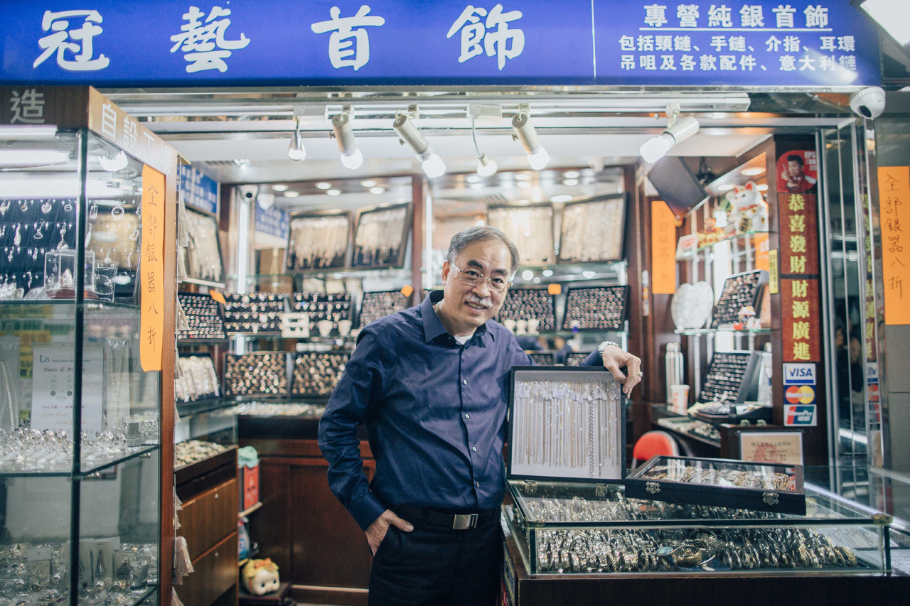

留住人情手藝

「幫到一班街坊熟客，真的好開心！」
在中國大媽全球搶金的潮流下，香港金鋪也遍地開花，一條街幾家金鋪的局面並不罕見。黃金當道，誰還記得價格相對低廉親民的銀飾呢？
冠藝銀飾店已經在葵涌廣場裏堅守了13年。這家店僅有50多平方呎，安局一隅，大多數客人都是商場附近的街坊，有的來給新生孫兒買銀鐲定驚，也有老人專門來買別處已經很難找到的傳統雕花銀鐲，一些熟客即使不買東西，也喜歡來坐坐聊天。
「銀雖然沒有黃金貴，但作用很多，可以定驚、去瘀、驅邪等等。」今年50多歲的曾國城是冠藝銀飾的老闆，說起銀飾就滔滔不絕。他十幾歲開始便進工作廠拜師學藝，學習打金和雕飾，在工廠打工20多年。2003年，上了年紀的他離開工廠，在這裏開了銀器手工店。許多熟客都知道曾師傅有一身打銀好手藝，又願意幫忙修理飾物。
有人帶來已經戴了十多年的銀墜子讓曾師傅翻新，有人搬家時找到已經去世的母親的一條項鍊，也來找曾師傅維修，留作紀念。
修一條項鍊通常收費數十元，賺不到什麼錢，但曾師傅自得其樂，只要客人開口，幾乎從不拒絕。許多住在遠處的客人還會透過whatsapp問他一些銀飾怎麼修理。
「如果去別的店，一般就是叫你買新的啦，不會幫你整（維修），但我有一套架撐（工具），整完就和新的差不多了，不用花錢買。」曾師傅說：「買幫到一班街坊熟客，真的好開心！」